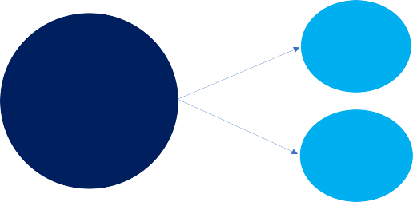

KORAALDIJK 131 ROOSENDAAL
MODELMATIGE WAARDESCHATTING
18 APRIL 2018
COLLIERS INTERNATIONAL B.V.
Buitenveldertselaan 5, 1072VA Amsterdam
Beste heer/mevrouw,
Hartelijk dank voor uw belangstelling in onze producten en/of diensten. Wij doen ons uiterste best om u zo goed mogelijk te voorzien van informatie en advies. Dat doen wij zoveel mogelijk gebaseerd op data om te komen tot een goede en feitelijke onderbouwing. Dit rapport is mede tot stand gekomen door het toepassen van algoritmes. Wij geloven dat dit in toenemende mate onderdeel gaat zijn van hoe wij werken. De algoritmes zorgen voor efficiëntie, een kwaliteitsslag en innovatie. Diepere inzichten en patronen kunnen worden ontdekt waardoor wij u kunnen voorzien van het meest hoogwaardige advies. Onze experts zijn in staat om een verdere kwaliteitsslag te maken en de resultaten van algoritmes voor u te positioneren. Graag beantwoorden wij uw vragen en wij zijn u graag van dienst!
Met vriendelijke groet,
A.B.C. Jansen
A.B.C. Jansen, MRE FRICS
Partner | Directeur Taxaties, Innovatie en Consulting Mobiel: +31 6 00 00 00 00
Telefoon: +31 20 000 00 00 E-mail: abc.jansen@000.com
Data Analyse Netherlands B.V. De markt 0
0000 AA Amsterdam The Netherlands
BETROUWBAARHEID: zeer hoog (99,4%) INDICATIE FOUTMARGE: 5,3%
BOVENGRENS MARKTWAARDE: EUR 247.455
ONDERGRENS MARKTWAARDE: EUR 222.545
MARKTWAARDE: EUR 235.000 (EUR 1.567/m2)
Het object heeft een geschatte waarde van EUR 235.000 op 18 april 2018 met een betrouwbaarheid van 99,4%. Dit betreft de geschatte marktwaarde1. Met een indicatie van de foutmarge van 5,3% worden de ondergrens en bovengrens geschat op EUR 222.545 en EUR 247.455.
Object | |
Straat | Koraaldijk |
Huisnummer | 131 |
Postcode | 4706KG |
Gemeente | Roosendaal |
Woningtype | Tussenwoning |
Prijs/m2 | 1.5672 |
Bouwjaar | 1980 |
Woonoppervlakte [m2] | 150 |
Perceeloppervlakte [m2] | 120 |
Bovenstaande tabel en foto geven enkele locatie specifieke en bouwkundige karakteristieken van het object. Onderstaande tabel geeft referentieverkopen weer.
Straat Postcode Prijs/m2 Datum

1 Koraaldijk 3 4706KG 1.600 16/01/2018

2 Diamantdijk 50 4706KA 1.267 20/04/2017
3 Dolomietdijk 378b 4706AA 1.950 06/12/2017
4 Ir. Mr. Dr. van Watersc 4706BB 1.620 30/06/2016
Chromietdijk 37bis | 4706ES | 1.555 | 04/02/2016 |
Koraaldijk 23 | 4706KK | 1.250 | 14/12/2015 |
5
2
6
1 “Het geschatte bedrag waartegen een object tussen een bereidwillige koper en een bereidwillige verkoper na behoorlijke marketing in een zakelijke transactie zou worden
overgedragen op de waardepeildatum, waarbij de partijen met kennis, prudent en niet onder dwang zouden hebben gehandeld” (International Valuation Standards Council, IVS 104: Bases of Value, 7 april 2016)
2 De geschatte AVM prijs gedeeld door de woonoppervlakte
BETROUWBAARHEID
De betrouwbaarheid van de modelmatige waardeschatting is afhankelijk van een verscheidenheid aan factoren. Van grote invloed is het aantal kwalitatief goede en vergelijkbare referenties in de directe omgeving. Onderstaande grafieken maken dit duidelijker op buurtniveau, waarin het aantal verkopen in de afgelopen 5 jaar is onderverdeeld naar oppervlakteklasse, bouwjaarklasse en woningtype. Bij minder dan 10 verkopen zijn onderstaande grafieken op gemeenteniveau.
Aantal verkopen in de afgelopen 5 jaar naar oppervlakteklasse
Aantal verkopen in de afgelopen 5 jaar naar bouwjaarklasse en wonintype
Stichting Taxaties en Validaties (STenV) stelt in het Addendum NEN-EN-ISO 9001:2015 dat de modelwaarde minimaal een betrouwbaarheid dient te hebben van 85%. TVI verduidelijkt dit verder in een nieuwsbrief: “De betrouwbaarheidsindicatie geeft de kans weer dat de transactieprijs voor een object binnen een band-breedte van 30% van de afgegeven modelwaarde ligt” met als voorbeeld: “Wanneer 100 objecten als waardering een modelwaarde van 100.000 euro hebben gekregen waarbij een betrouwbaarheidsindicatie van 85% is afgegeven, betekent dit dat naar verwachting 85 objecten een transactieprijs hebben tussen de 70.000-130.000 euro, 15 transactiegegevens liggen naar verwachting buiten de grenzen”3. Inmiddels wordt in plaats van 30% afwijking vaak een strengere normering van 20% aangehouden. Daarnaast bieden zowel de International Association of Assessing Officers (IAAO) en de Royal Institution of Chartered Surveyors (RICS) een meer kwalitatieve onderbouwing van betrouwbaarheid.

3 TVI, Nieuwsbrief TVI – Taxateur 01-07-2016, verkregen van: http://www.tvi.nl/www/nieuws/
Onderstaande grafieken bieden inzicht in de kwantitatieve betrouwbaarheidsindicator zoals zij door STenV en TVI worden gedefinieerd. Verder dient opgemerkt te worden dat in 77,0% van de gevallen de afwijking kleiner is dan 10% en in 54,4% van de gevallen de afwijking kleiner is dan 5%.
Betrouwbaarheidsscores “binnen 30%” en “binnen 20%”
Om te komen tot een classificering worden er uitgangspunten gehanteerd: indien de prestatie van het model groter dan of gelijk is aan 85% op de 20% afwijkingsnorm dan geldt de classificatie “zeer betrouwbaar” met daarbij het percentage op de 20% afwijkingsnorm. Indien de prestatie van het model op de 20% afwijkingsnorm kleiner is dan 85%, maar wel groter dan 85% op de 30% afwijkingsnorm, dan geldt de classificatie “betrouwbaar” met daarbij het percentage op de 30% afwijkingsnorm. In alle overige gevallen geldt de classificatie “onbetrouwbaar” met daarbij het percentage op de 30% afwijkingsnorm.

Los van bovenstaande is de mediane foutmarge voor de waardeschatting van het object modelmatig bepaald. Een schatting van de mediane absolute foutmarge is 5,3%. Deze inschatting van de foutmarge bepaalt de onder- en bovengrens van de waardering. De betreffende onderbouwing van de waardeschatting wordt hierna verder toegelicht aan de hand van referenties.
Boven- en ondergrens van de marktwaarde | ||
BOVENGRENS | ||
MARKTWAARDE: | ||
FOUTMARGE: | EUR 235.000 x (100% + 5,3%) | EUR 247.455 |
5,3% | ||
MARKTWAARDE: | ||
EUR 235.000 | ||
(EUR 1.567/m2) | ||
ONDERGRENS | ||
EUR 235.000 x (100% - 5,3%) | MARKTWAARDE: | |
EUR 222.545 | ||
ONDERBOUWING WAARDESCHATTING

De waardeschatting van EUR 235.000 (EUR 1.567/m2) kan worden onderbouwd aan de hand van referenties uit de omgeving. Onderstaand overzicht geeft de top-6 referenties weer met daarbij de karakteristieken. Deze referenties moeten worden vergeleken met het te waarderen object: Koraaldijk 131, 4706 KG in Roosendaal. Koraaldijk 131 is een tussenwoning, en heeft een woonoppervlakte van 150 m2, een geschatte inhoud van 450 m3, een perceeloppervlakte van 210 m2 en als bouwjaar 1950.
Koraaldijk 3 | ||
Bron | NVM | 99,5% match |
Postcode | 4706KG | |
Gemeente | Roosendaal | Indexatie laatste verkoopprijs: |
Laatste verkoopdatum | 16/01/2018 | EUR 199.949 |
Laatste verkoopprijs [EUR] | 196.800 | |
Laatste verkoopprijs/m2 | 1.600 | 16/01/2018 18/04/2018 +1,6% |
Woningtype | Tussenwoning | EUR 196.800 EUR 199.949 |
Woonoppervlakte [m2] | 123 | |
Inhoud [m3] | 369 | |
Perceeloppervlakte [m2] | 230 | Geïndexeerde prijs/m2: 1.626 |
Bouwjaar | 1950 | |
Afstand tot te waarderen object [m] | 12 | |
Diamantdijk 50 | ||
Bron | NVM | 90,5% match Indexatie laatste verkoopprijs: |
Postcode | 4706KG | |
Gemeente | Roosendaal | |
Laatste verkoopdatum | 20/04/2017 | EUR 168.992 |
Laatste verkoopprijs [EUR] | 164.710 | |
Laatste verkoopprijs/m2 | 1.267 | 20/04/2017 18/04/2018 +2,6% |
Woningtype | Tussenwoning | EUR 164.710 EUR 168.992 |
Woonoppervlakte [m2] | 130 | |
Inhoud [m3] | 390 | |
Perceeloppervlakte [m2] | 210 | Geïndexeerde prijs/m2: 1.300 |
Bouwjaar | 1960 | |
Afstand tot te waarderen object [m] | 20 | |
Dolomietdijk 378b | ||
Bron | NVM | 88,1% match Indexatie laatste verkoopprijs: |
Postcode | 4706KG | |
Gemeente | Etten-Leur | |
Laatste verkoopdatum | 06/12/2017 | EUR 293.378 |
Laatste verkoopprijs [EUR] | 292.500 | |
Laatste verkoopprijs/m2 | 1.950 | 06/12/2017 18/04/2018 +0,3% |
Woningtype | Tussenwoning | EUR 292.500 EUR 293.378 |
Woonoppervlakte [m2] | 150 | |
Inhoud [m3] | 450 | |
Perceeloppervlakte [m2] | 200 | Geïndexeerde prijs/m2: 1.956 |
Bouwjaar | 1940 | |
Afstand tot te waarderen object [m] | 46 | |

Ir. Mr. Dr. van Waterschoot van der Grachtstraat 1 | ||
Bron | NVM | 77,0% match |
Postcode | 4706BB | |
Gemeente | Roosendaal | |
Laatste verkoopdatum | 30/06/2016 | Indexatie laatste verkoopprijs: |
Laatste verkoopprijs [EUR] | 194.400 | EUR 190.512 |
Laatste verkoopprijs/m2 | 1.620 | |
Woningtype | Tussenwoning | 30/06/2016 18/04/2018 -2,0% |
Woonoppervlakte [m2] | 120 | EUR 194.400 EUR 190.512 |
Inhoud [m3] | 360 | |
Perceeloppervlakte [m2] | 210 | Geïndexeerde prijs/m2: 1.588 |
Bouwjaar | 1966 | |
Afstand tot te waarderen object [m] | 76 | |
Chromietdijk 37bis | ||
Bron | NVM | 63,4% match |
Postcode | 4706KG | |
Gemeente | Breda | Indexatie laatste verkoopprijs: |
Laatste verkoopdatum | 04/02/2016 | EUR 229.910 |
Laatste verkoopprijs [EUR] | 230.140 | |
Laatste verkoopprijs/m2 | 1.555 | 04/02/2016 18/04/2018 -0,1% |
Woningtype | Tussenwoning | EUR 230.140 EUR 229.910 |
Woonoppervlakte [m2] | 148 | |
Inhoud [m3] | 474 | |
Perceeloppervlakte [m2] | 155 | Geïndexeerde prijs/m2: 1.553 |
Bouwjaar | 2000 | |
Afstand tot te waarderen object [m] | 176 | |
Koraaldijk 23 | ||
Bron | NVM | 48,6% match |
Postcode | 4706KK | |
Gemeente | Noordwijk aan Zee | Indexatie laatste verkoopprijs: |
Laatste verkoopdatum | 14/12/2015 | EUR 276.250 |
Laatste verkoopprijs [EUR] | 250.000 | |
Laatste verkoopprijs/m2 | 1.250 | 14/12/2015 18/04/2018 +10,5% |
Woningtype | Tussenwoning | EUR 196.800 EUR 276.250 |
Woonoppervlakte [m2] | 200 | |
Inhoud [m3] | 603 | |
Perceeloppervlakte [m2] | 1.200 | Geïndexeerde prijs/m2: 1.381 |
Bouwjaar | 2010 | |
Afstand tot te waarderen object [m] | 25.238 | |
MARKTWAARDES, VRAAGRPIJZEN EN LOOPTIJDEN OP LOKAAL NIVEAU
Het gemiddelde verschil tussen marktwaarde en vraagprijzen is in de gemeente in de afgelopen 2 jaren voor transacties met hetzelfde woningtype (tussenwoning) -11,4%, daar waar dit percentage in de wijk en buurt respectievelijk -14,6% en -15,8% is. Onderstaande tabel geeft voor de buurt, wijk, gemeente en Nederland als geheel weer wat de gemiddelde vraagprijs en marktwaarde is geweest in de afgelopen 2 jaren. Het verschil tussen de twee in Euro’s en procenten, de gemiddelde looptijd in dagen en op hoeveel transacties dit is berust wordt ook weergegeven.
Buurt | Wijk | Gemeente | Nederland | |
Gemiddelde marktwaarde | EUR 300.500 | EUR 282.340 | EUR 334.987 | EUR 230.000 |
Gemiddelde vraagprijs | EUR 256.627 | EUR 237.730 | EUR 296.798 | EUR 248.400 |
Verschil (EUR) | EUR 43.873 | EUR 44.610 | EUR 38.189 | EUR 18.400 |
Verschil (%) | -14,6% | -15,8% | -11,4% | 8,0% |
Gemiddelde looptijd [dagen] | 36 | 55 | 80 | 56 |
Aantal transacties | 4 | 55 | 109 | 109.990 |
De analyse voor het verschil tussen marktwaarde en vaagprijzen en voor looptijd kan ook over tijd worden uitgevoerd. Onderstaande grafieken doen dit over de afgelopen 8 jaren.
Gemiddeld verschil tussen marktwaarde en vraagprijs over tijd
Gemiddelde looptijd over tijd
ADVISERING VRAAGPRIJSBEPALING
De geschatte looptijd (hoeveel dagen het object naar verwachting te koop zal staan) bij een gegeven vraagprijs kan modelmatig worden bepaald. Alhoewel dit slechts een indicatie is kan het helpen bij de vraagprijsbepaling. Het verlagen van de vraagprijs kan resulteren in een hogere looptijd in bepaalde gevallen. Een verklaring hiervoor kan zijn dat in die prijsklasse de woning concurreert met meer woningen in de directe omgeving, waardoor de looptijd toeneemt. Onderstaande tabel geeft de looptijd weer bij verschillende vraagprijzen. De middelste vraagprijs (gearceerd) is hierbij tot stand gekomen aan de hand van de modelmatige schatting van de marktwaarde en de uitkomsten van de analyse op de vorige bladzijde.
Vraagprijs | Looptijd [dagen] |
EUR 235.000 | 100 |
EUR 240.000 | 130 |
EUR 245.000 | 133 |
EUR 250.000 | 115 |
EUR 255.000 | 120 |
EUR 261.790 | 122 |
EUR 265.000 | 130 |
EUR 270.000 | 160 |
EUR 275.000 | 201 |
EUR 280.000 | 250 |
EUR 285.000 | 300 |
Onderstaande grafiek is gebaseerd op bovenstaande tabel, maar maakt het mogelijk om het verband tussen vraagprijs en looptijd beter te duiden.
Gemiddelde verschil tussen marktwaarde en vraagprijs over tijd
BENCHMARK VAN DE BUURT T.O.V. WIJK, GEMEENTE EN LANDELIJK
De buurt waarin het object zich bevindt kan op een groot aantal variabelen worden vergeleken met de wijk en gemeente. Ook kan de gemeente worden gebenchmarkt met Nederland als geheel. Onderstaande tabel geeft dit weer.
Buurt | Wijk | Gemeente | Landelijk | |
Wonen | ||||
Aantal woningen | 103 | 225 | 3.654 | 7.362.665 |
% tussenwoningen | 58% | 45% | 33% | 95% |
% hoekwoningen | 10% | 12% | 31% | 9% |
% 2-onder-1-kap woningen | 2% | 4% | 6% | 8% |
% vrijstaande woningen | 1% | 2% | 3% | 4% |
% appartementen | 54% | 66% | 23% | 89% |
% onder 60 m2 | 12% | 5% | 15% | 5% |
% 60 – 120 m2 | 35% | 84% | 48% | 7% |
% 120 – 180 m2 | 45% | 98% | 69% | 9% |
% boven 180 m2 | 0% | 0% | 15% | 22% |
% voor 1945 | 1% | 0% | 5% | 9% |
% 1945 – 1965 | 45% | 6% | 43% | 81% |
% 1965 – 1985 | 2% | 8% | 7% | 66% |
% 1985 – 2005 | 78% | 11% | 45% | 66% |
% na 2005 | 0% | 1% | 1% | 55% |
Demografisch | ||||
Aantal inwoners | 200 | 1.265 | 447.365 | 17.365.987 |
% mannen | 50% | 46% | 20% | 66% |
% vrouwen | 50% | 54% | 80% | 34% |
% tussen 0-25 jaar | 2% | 24% | 65% | 22% |
% tussen 25-65 jaar | 88% | 85% | 1% | 26% |
% 65 jaar en ouder | 22% | 92% | 99% | 8% |
% Westerse allochtonen | 88% | 45% | 98% | 1% |
% niet-Westerse allochtonen | 22% | 2% | 1% | 29% |
Gemiddelde huishoudensgrootte | 2,2 | 3.4 | 2,1 | 1,9 |
Bevolkingsdichtheid | 2.354 | 200 | 1.264 | 44 |
Economisch/financieel | ||||
% inkomstenontvangers | 55% | 65% | 77% | 89% |
Gemiddeld inkomen inkomstenontvanger [EUR] | 77.654 | 123.854 | 20.365 | 10.254 |
Gemiddeld inkomen per inwoner [EUR] | 10.236 | 15.235 | 145.236 | 2.654 |
Gemiddelde WOZ-waarde [EUR] | 1.235.658 | 200.102 | 458.659 | 203.654 |
% huishoudens met laag inkomen | 1% | 22% | 55% | 87% |
Aantal bedrijfsvestigingen | 187 | 200 | 9.364 | 1.256.369 |
Aantal personenauto’s per huishouden | 5 | 2 | 1 | 0 |
Sociaal | ||||
% bijstand | 98% | 20% | 2% | 14% |
% AO uitkering | 25% | 44% | 8% | 98% |
% WW uitkering | 23% | 15% | 69% | 7% |
% AOW uitkering | 98% | 68% | 2% | 1% |
% sociale huurwoningen | 99% | 25% | 99% | 22% |
Nabijheid voorzieningen [km] | ||||
Gemiddelde afstand tot ziekenhuis | 1,3 | 0,8 | 0,1 | 0,3 |
Gemiddelde afstand tot dagelijkse boodschappen | 3,4 | 2,4 | 42,3 | 54,3 |
Gemiddelde afstand tot cafés | 8,9 | 9,4 | 44,3 | 92,2 |
Gemiddelde afstand tot restaurants | 4,4 | 2,5 | 6,6 | 1,3 |
Gemiddelde afstand tot kinderdagverblijf | 4,6 | 64,2 | 104,4 | 50,2 |
Gemiddelde afstand tot buitenschoolse opvang | 2,6 | 9,5 | 88,2 | 8,2 |
Gemiddelde afstand tot treinstation | 9,2 | 1,5 | 0,3 | 8,2 |
Gemiddelde afstand tot zwembad | 8,2 | 8,8 | 8,4 | 8,0 |
Gemiddelde afstand tot bioscoop | 7,0 | 3,0 | 3,3 | 5,5 |
PRIJSONTWIKKELING
Bij de modelmatige waardeschatting wordt gebruik gemaakt van indexatie. Ook bij de onderbouwing hiervan zijn de marktwaardes van referenties geïndexeerd naar de waardepeildatum. De historische prijsontwikkeling (tot aan 8 jaar terug) is in onderstaande grafiek weergegeven voor de buurt, wijk en gemeente van het object.
Marktwaarde/m2
Jaar op jaar verandering in de marktwaarde/m2

Bovenstaande prijsontwikkelingen kunnen vergelijken worden met de buurten en wijken in de gemeente die over de afgelopen jaren de hoogste en laagste prijsontwikkeling hebben gehad. Ook kan de gemeente worden vergeleken met de landelijke prijsontwikkeling. Onderstaande tabel geeft dit weer.
12 maanden | 2 jaar | 3 jaar | 5 jaar | 8 jaar | |
Object - prijsontwikkeling | +3,2% | +7,1% | +10,0% | +11,2% | +6,3% |
Buurt met hoogste prijsontwikkeling | +5,4% | +8,2% | +10,0% | +12,4% | +7,0% |
Buurt met laagste prijsontwikkeling | -1,8% | -2,4% | -1,0% | +2,4% | +1,0% |
Wijk - prijsontwikkeling | +1,0% | +2,2% | +2,4% | +5,5% | +1,8% |
Wijk met hoogste prijsontwikkeling | +4,0% | +4,6% | +8,3% | +11,8% | +20,3% |
Wijk met laagste prijsontwikkeling | -1,0% | -4,0% | -5,4% | -3,5% | -12,4% |
Gemeente - prijsontwikkeling | +4,4% | +8,6% | +10,4% | +24,0% | +24,3% |
Landelijke prijsontwikkeling | +2,0% | +4,5% | +10,3% | +14,5% | -0,1% |
Het verduurzamen van de gebouwde omgeving speelt een steeds belangrijkere rol. De gebouwde omgeving zorgt voor ongeveer 40% van de CO2-uitstoot en om de doelstellingen van het klimaatakkoord te behalen voor 2050 moet er ingegrepen worden4. Voor een deel (bijv. sociale huurwoningen en kantoren) is dit gereguleerd. Onderstaande grafiek geeft de verdeling van energielabels weer in Roosendaal, daar waar het energielabel bekend is in de buitenste ring (voor 50.900 woningen van de in totaal 55.000 woningen). De middelste ring van de grafiek geeft de verdeling van energielabels weer specifiek voor tussenwoningen in Roosendaal (voor 11.320 tussenwoningen van de in totaal 30.000 tussenwoningen in de gemeente is dit bekend). De binnenste ring van de grafiek geeft dit weer voor de specifieke bouwjaarklasse (1965-1985) van het object in de gemeente (voor 2.255 woningen van de 100.235 met als bouwjaarklasse 1965-1985 is dit bekend).
Gemeentelijke verdeling van energielabels (buitenste ring), voor het woningtype (middelste ring) en de bouwjaarklasse (binnenste ring)
Vaak zijn kosten voor een energielabelverbetering bekend of kunnen daar kengetallen over gevonden worden (zie bijvoorbeeld: https://energiebesparingsverkenner.rvo.nl). Wat veelal onbekend is betreft de verhoging van de marktwaarde van het object door duurzaamheidsinvesteringen. Onderstaande tabel geeft een schatting van de waardeverhoging aan van een energielabelverbetering voor het specifieke object.
Energielabel object: | C |
Van energielabel
Naar energielabel
A | B | C | D | E | F | G | |
A | EUR 0 | ||||||
B | EUR 20.100 | EUR 0 | |||||
C | EUR 33.000 | EUR 10.900 | EUR 0 | ||||
D | EUR 34.300 | EUR 12.000 | EUR 44.300 | EUR 0 | |||
E | EUR 40.000 | EUR 13.500 | EUR 88.000 | EUR 8.200 | EUR 0 | ||
F | EUR 41.200 | EUR 18.000 | EUR 120.500 | EUR 9.000 | EUR 700 | EUR 0 | |
G | EUR 60.000 | EUR 22.600 | EUR 200.000 | EUR 9.500 | EUR 900 | EUR 1.000 | EUR 0 |

4 Duurzaamnieuws.nl, Duurzamer maken woningen moet sneller om klimaatakkoord te halen (18 juni 2017), verkregen van: https://www.duurzaamnieuws.nl
Verschillende algoritmische modellen (machine learning modellen) bepalen een groot deel van de uitkomsten zoals deze in dit rapport worden getoond. De modellen gaan uit van een grote verscheidenheid aan data en trachten alle waardes zo nauwkeurig mogelijk te voorspellen.
Automated Valuation Model (AVM)
Het AVM berekent de marktwaarde van het object aan de hand van gegevens van verkochte woningen. De marktwaarde is hier gedefinieerd als de leegwaarde van het object. Bij het construeren van dit algoritme zijn veel woningkenmerken en locatiegegevens gebruikt van verschillende bronnen. Gezamenlijk bepalen ongeveer 140 variabelen hoe marktwaarde wordt berekend. De laatste test geeft aan dat de mediane foutmarge van het AVM 5,4% is en dat 99,8%/80,4% een afwijking heeft die valt binnen de gestelde bandbreedte voor betrouwbaarheid (85% van de waarderingen binnen 30% afwijking/85% van de waarderingen binnen 20% afwijking). Indien een object wordt voorzien van een waardeschatting wordt slechts een (zeer) beperkte hoeveelheid variabelen opgevraagd. Dat kan alleen omdat aan de hand van opgegeven locatiegegevens het merendeel van de variabelen wordt toegevoegd. Vervolgens kan het algoritme komen tot een waardeschatting.
Betrouwbaarheid
Voor een inschatting van betrouwbaarheid wordt een vijftal modellen gebruikt. Basis voor deze modellen zijn een groot aantal (honderdduizenden) AVM testwaarderingen. Voor de testwaarderingen is de absolute afwijking berekend van de werkelijke transactieprijs. Van elke testwaardering is tevens een groot aantal woningkenmerken en locatiegegevens bekend. Het eerste classificeringsmodel voorspelt of de afwijking kleiner is dan 30%, het tweede classificeringsmodel voorspelt of de afwijking kleiner is dan 20%, het derde classificeringsmodel voorspelt of de afwijking kleiner is dan 10% en het vierde classificeringsmodel voorspelt of deze afwijking kleiner is dan 5%. Vervolgens voorspelt een vijfde model de absolute afwijking (foutmarge).
Referenties
Referenties worden bepaald aan de hand van een aantal geprogrammeerde regels. Hierin worden zowel woningkenmerken als locatiegegevens meegenomen. Voorbeelden zijn de afstand tot het te waarderen object, woonoppervlakte, woningtype en bouwjaar. Voor overeenkomsten krijgt een referentie pluspunten en voor afwijkingen ten opzichte van het te waarderen object wordt het aantal pluspunten verminderd en/of zijn er minpunten. Daarnaast zijn er een aantal harde regels (bijv: voor appartementen worden er ook alleen meergezinswoningen als referentie meegeleverd en dus niet tussenwoningen of vrijstaande woningen).
Looptijd
Van verkochte woningen is bekend hoe lang zij te koop stonden (gedefinieerd in dagen). Aan de hand van woningkenmerken, locatiegegevens en economische variabelen is een model geconstrueerd dat looptijd voorspelt.
Prijsontwikkeling/indexatie
Het indexatiemodel voorspelt de marktwaarde/m2 op een vergelijkbare manier zoals het AVM dat doet. Vervolgens wordt per buurt, wijk en gemeente een “typische” woning geconstrueerd. Dit gebeurt onder andere aan de hand van gemiddelde groottes, een gemiddeld bouwjaar en het meest voorkomend woningtype van woningen in de buurt. Met het indexatiemodel wordt vervolgens de marktwaarde/m2 geschat op verschillende momenten in de tijd.
Duurzaamheid
Verschillende woningen worden met het AVM voorspeld, met telkens een ander energielabel (elke woning wordt voorspeld als zijnde energielabel A, dan B, dan C en zo tot aan G). Zo ontstaat voor alle woningen een verschil in marktwaarde als van een energielabel wordt gegaan naar een ander energielabel. Deze data wordt schoon gemaakt (foutieve of rare waardes worden verwijderd) en vormt vervolgens input voor een tweede model. Dit tweede model voorspelt het verschil in marktwaarde als wordt gegaan van een slechter naar een beter label aan de hand van woningkenmerken en locatiegegevens.
De modellen worden naar beste weten en kunnen geconstrueerd. Toch blijft het waarderen van een woning in enige mate subjectief. Bepaalde invloeden zijn moeilijk modelmatig mee te nemen (bijvoorbeeld staat van onderhoud of erfpacht). Data dat wordt gebruikt voor de modellen wordt gecontroleerd ten behoeve van kwaliteit aan de hand van regels. De afnemer erkent dat de in dit rapport gebruikte gegevens (ook) komen van derden en dat daarom de juistheid van deze gegevens niet kan worden gegarandeerd. De maker en verspreider van dit rapport is daarom niet aansprakelijk voor enige schade, direct of indirect, die voortvloeit uit de beoordeling, interpretatie of het gebruik door de afnemer van de gegevens in dit rapport.
De privacy van de afnemers van dit rapport wordt gerespecteerd. Hoewel de grootste nauwkeurigheid wordt betracht, kan de maker van dit rapport niet aansprakelijk worden gesteld als gegevens (informatie) door derden wederrechtelijk wordt verkregen.

A.B.C. Jansen, MRE FRICS
Partner | Directeur Taxaties, Innovatie en Consulting Mobiel: +31 6 00 00 00 00
Telefoon: +31 20 000 00 00 E-mail: abc.jansen@000.com
Data Analyse Netherlands B.V. De markt 0
0000 AA Amsterdam The Netherlands